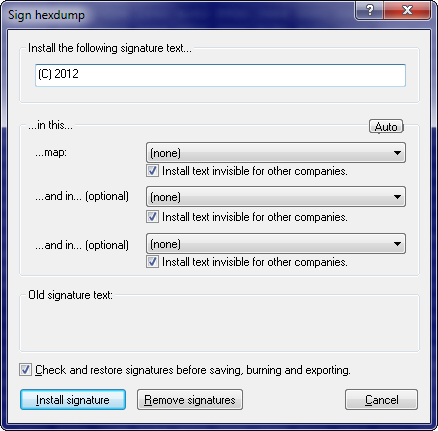

|
The Dialog Sign Hexdump (Menu Edit) |

  
|
|
The Dialog Sign Hexdump (Menu Edit) |
|

Use this dialog to install texts into a project file in such a way, that it is normally not visible. This may be useful for example, to brand all your files 'invisibly' with your company name.
WinOLS will make very small changes to the project. These changes are normally too small to be relevant for the functionality, but large enough to code text into it.
In order to work these function needs to know what map or maps it may change. The larger the map and the more bytes per cell it has (for example 2 bytes for a 16 Bit value), the more data can be stored. For best performance use large maps. Otherwise you can only install small texts.
You may hide the texts from other companies. That way, other people (not in you company) working with WinOLS will not see any message at all. On the other hand you may decide to not to hide the texts. That way, other people can see the text in the dialog, but they do not know where the text is stored within the file. That makes it difficult (but not impossible) to remove. The best way is perhaps a combination. You can install one visible text and two more invisible.
Since signatures may be disturbed when you’re editing the project, it is recommended to let WinOLS check and restore them before the project is saved, exported or written into an eprom.
Some more notes:
| · | To create an import protection that is difficult to remove, activate the NOREAD checkbox. Since signatures always contain the WinOLS customer number, you will still be able to reimport the file. |
| · | Don’t use maps with very small changes in the data, because the changes done by WinOLS could make a relevant difference when the data is used. |
| · | You can install the same text several times for more security. If one change is disturbed, there are still others left. |
| · | You can only remove signatures performed by your company. You cannot remove signatures from others. |
| · | Use the 'Auto' function with care. It may select maps that are not fit for changes in your opinion. |
| · | Check any maps that are changed afterwards to see if the changes are not too big. |
| · | The function 'Remove Signatures' overwrites the signatures, but it does not restore the original values. If you want to get the original values, please use the undo command as usual. |
| · | The signature can be seen in the install signature and in the version dialog. |
Unsuitable for this function are:
| · | small maps |
| · | maps with skip bytes |
| · | maps with float values |
Shortcuts
| Symbol bar: |
| Keyboard: | - |